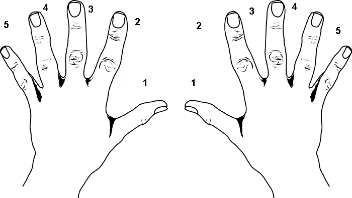
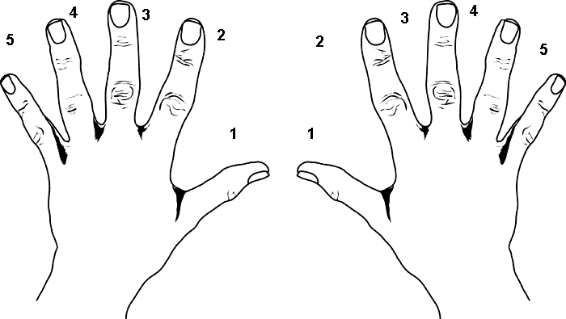

Lectia de pian
Postura corecta
Cu toate ca este un aspect care nu este luat atat de mult in considerare, postura la pian joaca un rol important in performanta unui pianist, motiv pentru care este important sa iti formezi un obicei bun de la inceput.
- Folositi un scaun cu o intaltime potrivita, astfel incat sa ajungeti cu mainile la nivelul clapelor.
- Scaunul trebuie sa fie direct in fata pianului
- Stați pe jumatatea din față a banchetei.
- Relaxați-vă picioarele și păstrați-le drept pe podea, de la călcâi până la degete.
- Relaxați-vă umerii și brațele, păstrați-vă spatele drept și stați astfel încât să puteți mișca fără probleme totul până la vârful degetelor.

Postura corecta a degetelor
 


Este dificil să canti cu încheieturile și coatele poziționate mult mai jos decât clapele. Regleaza înălțimea scaunului, astfel încât coatele să fie aproape la nivelul clapelor.
Puneți-va ambele mâini pe tastatură. Imaginați-vă că țineți un ou pe palma mâinii. Aceasta este poziția corectă a mâinii. Relaxati-va mâinile și acest lucru vă va permite să cantati fără probleme.
Una dintre primele melodii ce este invatata de majoritatea celor ce studiaza pianul este oda bucuriei, de Beethoven. Ideal, ar trebui sa poti citi urmatoarea partitura, insa daca ti se pare putin prea dificil, ai putea sa te folosesti de sistemul degetelor din imaginea alaturata. Atribuindu-i fiecarui deget cate un numar si pozitionand degetul mare de la mana dreapta pe nota do centrala, ai putea sa canti melodia urmarind urmatoarea secventa de numere:
3-3-4-5-5-4-3-2-1-1-2-3-3-2-2
3-3-4-5-5-4-3-2-1-1-2-3-2-1-1
Puneți-va ambele mâini pe tastatură. Imaginați-vă că țineți un ou pe palma mâinii. Aceasta este poziția corectă a mâinii. Relaxati-va mâinile și acest lucru vă va permite să cantati fără probleme.
Exercitiu
Una dintre primele melodii ce este invatata de majoritatea celor ce studiaza pianul este oda bucuriei, de Beethoven. Ideal, ar trebui sa poti citi urmatoarea partitura, insa daca ti se pare putin prea dificil, ai putea sa te folosesti de sistemul degetelor din imaginea alaturata. Atribuindu-i fiecarui deget cate un numar si pozitionand degetul mare de la mana dreapta pe nota do centrala, ai putea sa canti melodia urmarind urmatoarea secventa de numere:
3-3-4-5-5-4-3-2-1-1-2-3-3-2-2
3-3-4-5-5-4-3-2-1-1-2-3-2-1-1